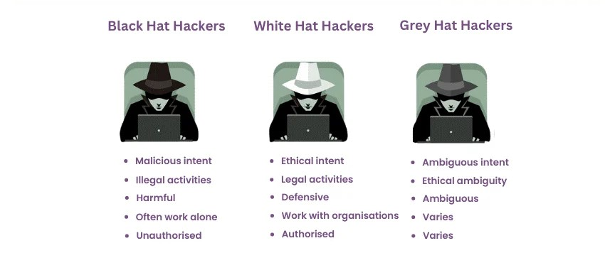
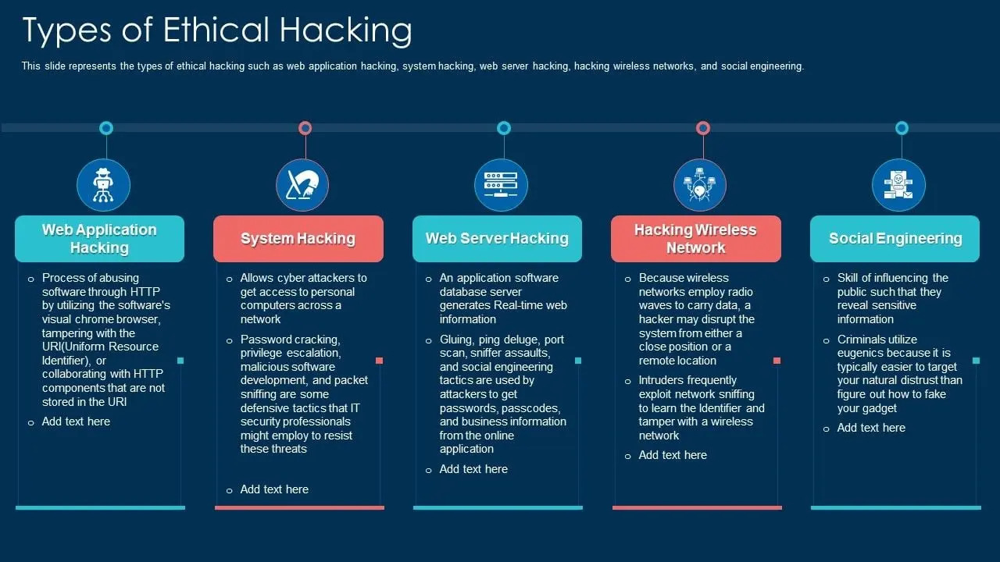
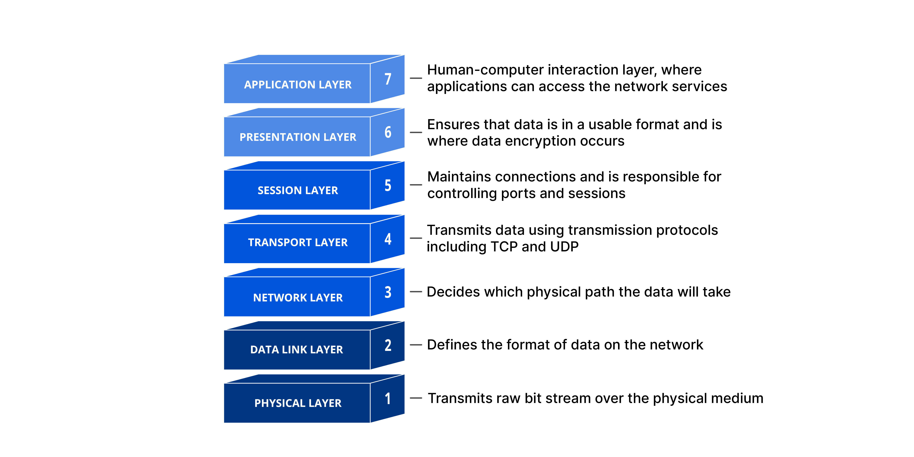
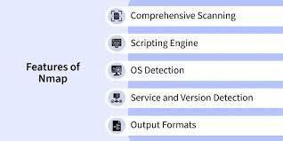
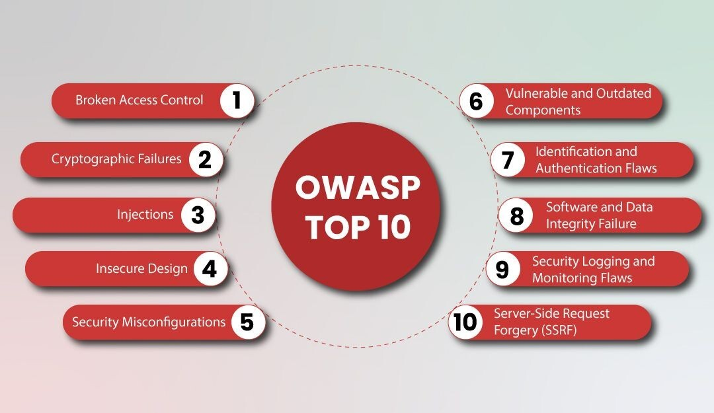

Ethical hacking is an authorized attempt to gain unauthorized access to a computer system, application, or data using the strategies and actions of malicious attackers. This practice helps identify security vulnerabilities that can then be resolved before a malicious attacker has the opportunity to exploit them. Ethical hackers are security experts who perform these proactive security assessments to help improve an organization’s security posture. With prior approval from the organization or owner of an IT asset, the mission of an ethical hacker is the opposite of malicious hacking.
Organizations use ethical hackers to protect sensitive data, prevent cyber attacks, and secure digital infrastructure. Ethical hacking is crucial because it allows organizations to identify, analyze, and patch security vulnerabilities before malicious hackers exploit them, preventing data theft, financial loss, and reputational damage. By simulating cyberattacks, ethical hackers strengthen network security, ensure regulatory compliance, and safeguard sensitive information in an increasingly hostile digital.


A computer network is a system of interconnected computing devices—ranging from traditional to cloud-based environments—that communicate and share resources with one another. Networking, or computer networking, involves connecting two or more computing devices (for example, desktop computers, laptops, mobile devices, routers, applications) to enable the transmission and exchange of information and resources. Networked devices rely on communication protocols—rules that describe how to transmit or exchange data across a network—allowing them to share information over physical or wireless connections.
IP Address: IP (Internet Protocol) address is a unique numerical label assigned to every device—like computers, smartphones,
and printers — connected to a computer network.
DNS: The Domain Name System (DNS) is the internet's phonebook, translating human-readable domain names (e.g., example.com) into machine-readable IP addresses (e.g., 192.0.2.1).
Ports: ports are virtual, software-based endpoints (numbered 0–65535) that manage specific data connections and services. allowing computers to run multiple applications simultaneously,
Protocols:A protocol is a standardized set of rules, procedures, and conventions that govern how data is transmitted, formatted, and processed between devices on a network.
The Open Systems Interconnection (OSI) model is a 7-layer framework developed by the ISO to standardize how diverse computer systems communicate.

Linux is a free, open-source operating system (OS) based on Unix, designed to manage computer hardware and software resources. Released by Linus Torvalds in 1991, it powers a vast range of devices, from internet servers and supercomputers to Android phones and personal computers.
ls – List files
cd – Change directory
chmod – Change permissions
apt – Install packages
pwd - Prints the full path of the current working directory.
mkdir - Creates a new directory (folder).
touch - Creates a new, empty file or updates the timestamp of an existing one.
mv - Moves or renames files and directories.
rm - Deletes files and directories (use with caution, as it permanently removes them).
Kali Linux is a specialized, open-source Linux distribution based on Debian, designed specifically for digital forensics, penetration testing, and ethical hacking. Maintained by Offensive Security, it comes pre-installed with over 600 security tools for vulnerability analysis, network security assessment, and, Kali Linux is popular among cybersecurity professionals.
Programming and scripting are crucial for ethical hacking, enabling automation of tasks, vulnerability identification, and creation of custom exploitation tools. Python is the primary, versatile language used for scripting, network tools, and data analysis, while Bash and PowerShell are vital for operating system automation.
Python :- Python is a high-level, general-purpose programming language known for its simple, readable syntax that emphasizes code clarity and uses indentation rather than curly brackets.
C Programming :- C programming is a powerful, general-purpose procedural programming language known for its efficiency, low-level memory access via pointers, and high performance.
Bash Scrpting :- Bash scripting is the process of writing a series of commands for the Bash (Bourne Again SHell) command-line interpreter in a single plain text file to automate tasks.
PowerShell :- PowerShell is a cross-platform, open-source automation framework developed by Microsoft that includes a command-line shell, a scripting language, and a configuration management platform.
HTML (HyperText Markup Language) is the standard, platform-agnostic markup language used to create the structure and layout of web pages.
CSS (Cascading Style Sheets) is a stylesheet language used to describe the presentation and visual formatting of a document written in a markup language like HTML.
JS stands for JavaScript, a versatile, high-level programming language that is one of the core technologies of the World Wide Web, alongside HTML and CSS.
SQL (Structured Query Language) is a standardized programming language used to manage, manipulate, and retrieve data from relational databases.
A web server is a combination of computer hardware and software that stores website files (HTML, CSS, images) and delivers them to users via HTTP/HTTPS, enabling websites to be accessed over the internet.
Nmap (Network Mapper) : is an open-source network scanning tool used to discover devices, identify open ports, detect services and their versions, and gather information about operating systems on a network. It is widely used for network auditing, security assessments, and troubleshooting. Nmap allows users to do a bunch of things that are related to a wide range of network-related tasks.
Network Discovery: With Nmap, users can scan networks and discover devices and hosts on a network, allowing network admins to understand the network more efficiently.
Port Scanning: It can determine which ports are open and which services are running on those ports, which is critical for security assessments and vulnerability scanning.
OS Fingerprinting: Nmap can attempt to identify the operating system running on a target host by analyzing various characteristics of network packets.
Vulnerability Assessment: It's a valuable tool for identifying potential vulnerabilities in systems and services, aiding in proactive security measures.
Network Monitoring: Nmap can be used for continuous monitoring to detect changes in the network environment.

It is a non-profit global online community consisting of tens of thousands of members and hundreds of chapters that produces articles, documentation, tools, and technologies in the field of web application security. OWASP releases the Top 10 Web Application Security Risks every 3-4 years based on real-world vulnerability data. The list is created using frequency, severity, and impact of security flaws found in web applications. It highlights the most common and most dangerous vulnerabilities that attackers frequently exploit. The latest update (2021) helps developers and security professionals build more secure applications. It is considered an essential security guide and industry standard for web application security best practices.
